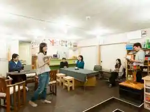
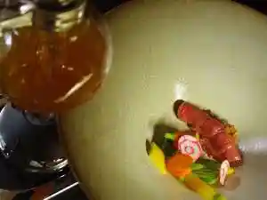
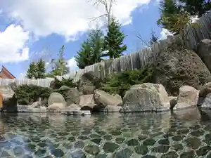
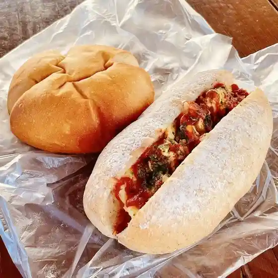
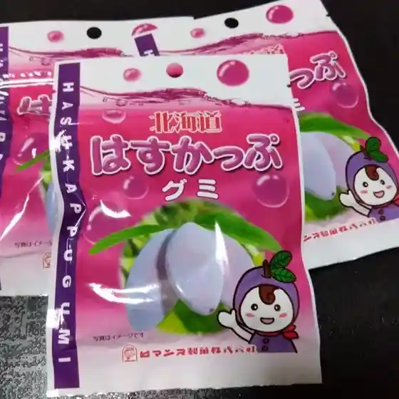
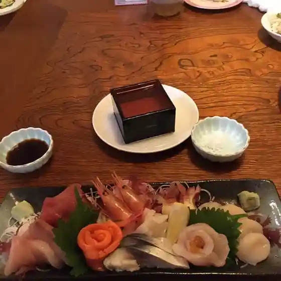
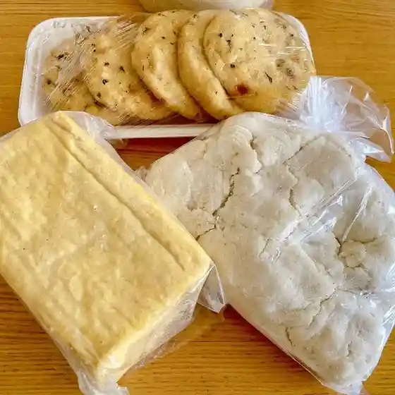
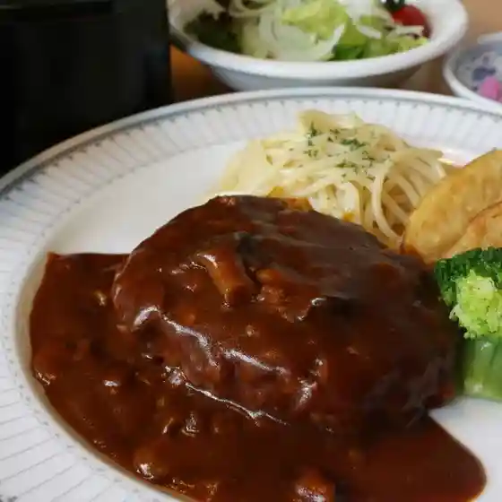
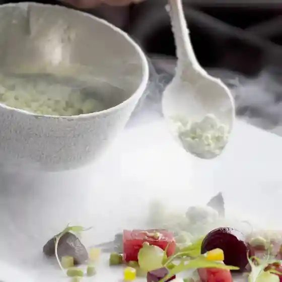
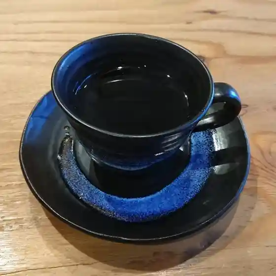

Tsubetsu
Tsubetsu · Hokkaido
Tsubetsu
Highlighted on the Hokkaido map.
Stay
ゲストハウスnanmo-nanmo

Gesutohausu Nanmo-Nanmo
チミケップホテル

Chimikeppuhoteru
奥屈斜路温泉 ランプの宿 森つべつ

Oku Kussharo Onsen Ranpu No Yado Mori Tsubetsu
Dining
パン工房るぱ
Pan Koubou Rupa
クレシェ

Kureshie
ロマンス製菓

Romansu Seika
初音鮨

Hatsune Sushi
柿崎商店

Kakizaki Shouten
森つべつ

Mori Tsubetsu
チミケップホテル

Chimikeppuhoteru
JIMBA

Jimba
JAZZ BAR セッション
Jazz Bar Sesshon
炭火焼肉 じゅうじゅう苑
Sumibi Yakiniku Juujuu En
駅舎cafe ホロカ
Ekisha Cafe Horoka
ケーキ銘菓のしのはら
Keeki Meika Noshinohara
cafe 津別珈琲
Cafe Tsubetsu Koohii
菓子工房cippola
Kashi Koubou Cippola
GREENS COFFEE LOUNGE
Greens Coffee Lounge
味登利家
Aji Tou Toshiie
そば処 あいおい
Soba Tokoro Aioi
相生物産館
Aioi Bussan Kan
幾島珈琲研究所
Ki Shima Koohii Kenkyuusho
羽前屋菓子舗
Uzen Ya Kashi Ho
ピンクの八百屋
Pinku No Yaoya
モンゴルカフェ ひつじや
Mongorukafe Hitsujiya
川瀬牧場
Kawase Bokujou
Sights
Tsubetsu Pass Tembo Shisetsu
Tsubetsu Toge Tembo Shisetsu